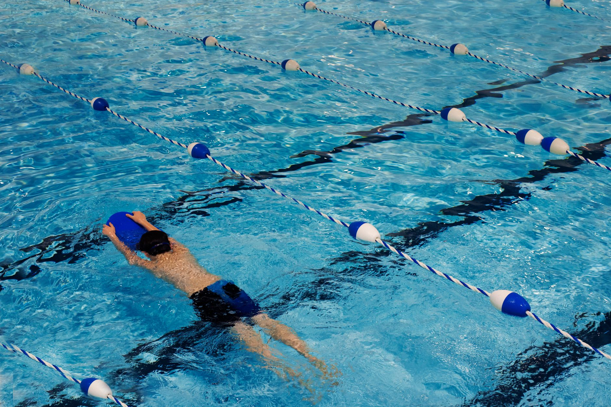

A Preventable Tragedy: Florida's Drowning Crisis
Florida is known for its sunshine, its beaches, and its year-round access to water — but that same abundance of water comes with a sobering reality. Drowning remains one of the leading causes of accidental death among children in the state of Florida. Recent news coverage highlighting the possibility of expanded free swim lesson programs across Florida has brought renewed attention to a public health issue that affects families right here in the Tampa Bay area, including communities like Wesley Chapel and Land O' Lakes.
For parents, this news is both alarming and hopeful. It is a reminder that water safety is not a luxury — it is a necessity. And for young athletes who are already involved in aquatic sports, it is a powerful illustration of why the skills they develop in the pool extend far beyond competition.
Water Competency Is the Foundation of Everything
Whether a child is just beginning to splash around in a neighborhood pool or competing in a high-level swim meet, the foundational skill beneath it all is water competency. Water competency means being able to enter the water safely, stay afloat, move through the water, and exit safely. These are skills that can mean the difference between life and death in an emergency situation.
Young athletes who train in competitive swimming or water polo develop these skills naturally as part of their sport. However, it is important to recognize that participation in aquatic sports is about far more than trophies and times. Every lap a swimmer completes and every sprint across the pool a water polo player makes builds a deeper, more instinctive relationship with the water — one that translates directly into safety.
Why Aquatic Sports Are Part of the Solution
Organized aquatic sports programs play a meaningful role in drowning prevention, even when that is not their primary mission. Consider what young athletes gain through consistent training:
- Comfort in the water: Regular exposure helps swimmers and players develop confidence and reduce the panic response that contributes to drowning incidents.
- Physical endurance: Building the stamina to tread water and stay calm in difficult situations is a direct byproduct of aquatic training.
- Breathing control: Proper breathing technique, practiced extensively in both swimming and water polo, is a critical survival skill.
- Respect for the water: Coaches and programs that emphasize safety culture teach young athletes to approach the water with awareness, not recklessness.
What This Means for Families in Wesley Chapel and Land O' Lakes
If your child is not yet enrolled in any form of structured swim instruction, now is an important time to consider it. With Florida policymakers exploring expanded access to free swim lessons, the conversation around youth aquatic education is growing louder — and for good reason. Families in Pasco County and the broader Tampa Bay area have access to quality aquatic programs that can give children the skills they need to be safe around water for the rest of their lives.
At Nexar Aquatic Academy, we believe that developing elite young athletes and promoting water safety go hand in hand. Our competitive swimming and water polo programs are designed to build technically sound, confident, and water-aware athletes from the ground up. When a child joins our program, they are not just learning to compete — they are learning to thrive safely in an aquatic environment.
The Takeaway for Every Tampa Bay Parent
Drowning is preventable. That is the message behind the growing push for expanded swim education in Florida, and it is a message that every parent in Wesley Chapel, Land O' Lakes, and across the Tampa Bay region deserves to hear clearly. Whether your child dreams of competing in water polo at the collegiate level or simply wants to feel safe at the neighborhood pool, structured aquatic education is one of the most valuable investments you can make in their future.
We encourage every family to take water safety seriously — and to explore the programs available in your community. Nexar Aquatic Academy is proud to be part of that solution for the Tampa Bay area.
Ready to get in the water?
First practice is completely FREE — no commitment needed.